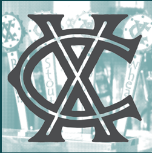

Visit Cross Country Brewing's Website
Cross Country Brewing was opened in March, 2017, by the Cross family. The Crosses have lived in Glendive since 1951, and we remain dedicated to sustaining and building our community.
The Brewery and Tap Room is located in the old Cross Petroleum building, 1000 sq feet that had been empty and unused since 1990 until we rehabilitated the building for our brewing purposes.
Owners Lonnie and Justin started the brewery after retirement, and their sons, John and Elliot, are the master brewers who have been brewing since 2009.
We hope you stop by and see us!
Buy A Physical MT Brewery Passport Today!
Tap the Map to Go Back